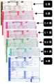

2023年
問題163 産業廃棄物管理票制度(マニフェスト制度)に関する次の記述のうち，最も不適当なものはどれか．
（1）紙マニフェストの場合，運搬作業が終了すると中間処理業者よりマニフェストB2票が排出事業者に返却される．
（2）紙マニフェストの場合，排出事業者はマニフェストA票を控えとして保存する．
（3）収集運搬業者の選定に当たっては，排出場所と運搬先の両方の自治体の許可を取得していることを確認する．
（4）返却されたマニフェストの伝票を5年間保存する．
（5）電子マニフェストは，A票，B2票，D票，E票の保存が不要である．
2023年
問題163 正解（1） 頻出度AAA
B2票は運搬業者⇛排出事業者，中間処理業者からは，D票⇛排出事業者，である．
産業廃棄物の排出事業者が，その処理を委託した産業廃棄物の移動及び処理の状況を自ら把握するために産業廃棄物管理票制度（マニフェスト制度）が設けられている（廃棄物処理法第12条の3）．マニフェストとは本来積荷目録のことである．このマニフェストの伝達によって，不法投棄の防止，有害廃棄物の適正処理を担保しようとする移動管理のシステムである．
マニフェスト制度には電子マニフェストと紙マニフェストが規定されている．電子マニフェストは，通信ネットワークを使用して，排出事業者がその処理を委託した廃棄物の流れを管理する仕組みである．現在一部の廃棄物について電子マニフェストが義務化されようとしている．
電子マニフェスト制度では，データは行政，排出事業者，処理業者と共有され，マニフェスト票の保管の必要がない．
標準の紙マニフェストは7枚綴りの複写伝票で，排出事業者が交付する1次マニフェスト，中間処理業者が発行する2次マニフェストがある（2023-163-1 図参照）．
2023-163-1図 直行マニフェスト票

出典 アースデザインインターナショナル株式会社
https://edi.ne.jp/trivia/trivia_26.html
マニフェスト各票の流れ，役割等は2023-163-1表，2023-163-2図参照．
排出事業者は，B2票，D票，E票の返却送付期限が過ぎても各票が返却されない時は，処分状況を確認しなければならない．
2023-163-1表 産業廃棄物管理票（マニフェスト）のながれと各票の役割
| 票名 | 流れ | 役割 | 返却送付期限 | |
| 産業廃棄物 | 特別管理産業廃棄物 | |||
| A | 排出事業者の控え | 排出事業者の廃棄物引渡し確認用 | － | － |
| B1 | 排出事業者→運搬受託者→処分受託者→運搬受託者 | 運搬受託者の運搬終了確認用 | － | － |
| B2 | 排出事業者→運搬受託者→処分受託者→運搬受託者→排出事業者 | 排出事業者の運搬終了確認用 | 90日 | 60日 |
| C1 | 排出事業者→運搬受託者→処分受託者 | 処分受託者の処分終了確認用 | － | － |
| C2 | 排出事業者→運搬受託者→処分受託者→運搬受託者 | 運搬受託者の処分終了確認用 | － | － |
| D | 排出事業者→運搬受託者→処分受託者→排出事業者 | 排出事業者の処分終了確認用 | 90日 | 60日 |
| E | （最終処分受託者からの2次マニフェストのE票を受けて，排出事業者→運搬受託者→処分受託者→排出事業者 | 排出事業者の最終処分終了確認用 | 180日 | |
| 各票保存期間 | 5年 | |||
2023-163-2図 紙マニフェストの流れ（直行用※）

出典 公益財団法人 日本建築衛生管理教育センター
「新建築物の環境衛生管理第2版第1刷」下巻102頁 図7-5-2(2)を基に作成
※ 直行用マニフェストは，排出事業者から直接，処分場へ運搬を行うときに用いる．他に積み替え用マニフェスト，建設廃棄物用マニフェスト等がある．